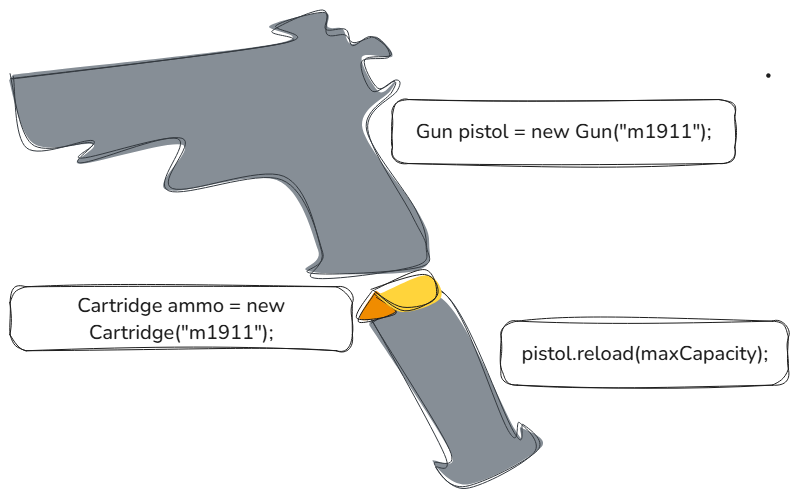
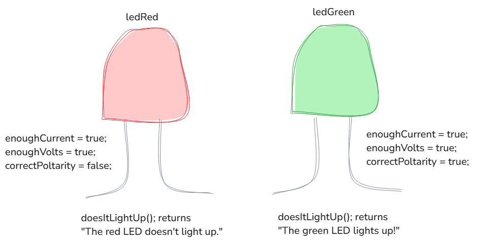

Object Oriented Programming
The phrase object oriented programming, commonly abbreviated as OOP, refers to a general conceptualization of programming (a programming paradigm) founded on the concept of objects.
As per the example demonstrated above, an “object” commonly correlates to a tangible “thing” in reality. Likewise, just a tangible firearm may fire catridges, reload its magazine or be coloured gold (for some razzle-dazzle), an object in Java typically possesses fields and methods, which are collectively called members.
A field is data, or information interpretable by a computer, stored within a variable, which is a name that correlates storage location in computer memory. A method is a named code block, or lines of code grouped together, that executes when called to perform a particular function. In practice, a field describes the state (or plainly, attribute) of an object and a method determines the behaviour (or capability) of an object. An object intented to represent an LED may be (or literally, exist as) the colour red and have the capability to become illuminated depending on current, polarity and voltage.

Yet, early in programming history, there arose the issue of how members are organized and used within a program,
of which two predominant paradigms within OOP became solidified: Prototype-based and class-based
programming.
The former determines that states and behaviours are stored within an object called a prototype. If
another object should use certain members found witin a prototype, then the object inherits, or
reuses certain members, from the prototype.
The latter declares, or defines, fields and methods (or functions) within a template called a
class. An object is an instance of a class, whereby the object is then provided states and
behaviours correlating to each field and method or function.
Java is strictly a class-based OOP language.
In fact, any .java file may only contain one public or default (a
topic delved into farther below, though here: public means the class is accessible from anywhere
within the program and default means the class is accessible from within a particular section within
the program, called a package) class.
This public class is often named Main or a specific name followed by
Driver, and contains a method named main that allows the program to work, or
run when executed. As a note, the latter name is preferred when the program is a specific component of
a larger application: Since the class “drives” any other classes tethered to the file's execution.
Classes
In Java, there exist various methods for declaring a class.
However, the generalized syntax for a conventional declaration is as follows:
[access modifier, if any] [non-access modifiers, if any] [name of the class] {
[code goes between the parentheses]
}
The technical specifics of an access modifier and non-access modifier are outside the
immediately scope of this webpage. However, both types of modifiers are conceptually simple.
A modifier is a keyword, or a word reversed for a particular function by the JVM, that affects
the functionality of a class or a member.
An access modifier is a modifier that concerns how a class or member is accessed across a
program. A top-level class is either: public or default. An nested class, or a
class that is declared inside another class may also be private.
public: Class accessible throughout a program.- default: Indicated by the lack of a keyword; class only accessible within a
package. private: Class only accessible within another class.
A non-access modifier is a modifier that concerns all other aspects of a class or members other than
accessibility. There exist seven, yet only abstract, final and strictfp
are applicable to top-level classes; with the aforementioned non-access modifiers, as well as
static, are accessible to nested classes.
static: The nested class does not require an object to instantiate.abstract: Class cannot be instantiated.final: Class may not be inherited from.stricfp: Relevant to legacy systems; class must use IEEE 754-1985 floating-point semantics for consistency across different computers.
The name of the class must conform to convention and be relevant to its purpose.
Java convention specifies that all class names be written in PascalCase, where the first letter of each word is
capitalized and that there be no space or symbolic divider between words. A class name must not use a symbol (if
written in English) or numeral as its first character; otherwise, compilation fails.
Additionally, a class name should refrain from using symbols or numerals (though spelt words are acceptable) at
all, and from being non-descriptive or confusingly similar to the name of other classes.
A top-level class responsible for the execution of all code within a file is often named Main or
SomeDriver, where “Some” is some functionality or purpose.
For example, a .java file titled Main would have a public top-level class
declared as such:
/* Main.java */
public class Main {
public static void main(String[] args) {
// The 'main' method should be found in a top-level class named 'Main'
// The method allows for the file to execute; the class allows for the proper containment of the method.
}
}
Other examples are detailed below, with comments describing the function of the particular class:
/* TopLevelStaticNestedExample.java */
// The 'TopLevel' class may be public or default, though it may never be static.
// Otherwise, it would be contradictory: A top-level class cannot except itself of requiring an instance.
public class TopLevel {
private static Nested {
// However, a nested class may be both private and static.
// A nested class could be only accessible within the 'TopLevel' class.
// The same private nested class may also not require an instance of itself.
}
}
/* AbstractAndConcrete.java */
// The top-level class 'AbstractAndConcrete' is declared with the 'abstract' keyword.
// For 'AbstractAndConcrete' is abstract, the class may contain both abstract and 'concrete' (non-abstract) members.
public abstract class AbstractAndConcrete {
// An abstract method has no implementation and must be implemented by 'subclasses'.
// Summarily, 'subclasses' are classes that inherit members from another class, which is called a 'superclass'.
public abstract void abstractMethod();
public void concreteMethod() {
// A concrete method has an implementation specified in the class that it is delcared within.
}
}
/* Uninheritable.java */
// The top-level class 'Uninheritable' is declared with the 'final' keyword.
// Yet, whilst 'Uninheritable' is final, class members need not necessarily be final themselves;
// and a non-final class may contain final members.
// Only, 'Uninheritable' may not be inherited from by subclasses (and itself be a superclass).
public final class Uninheritable {
public final void finalMethod() {
// A final member cannot be altered after its delcaration
}
public void nonFinalMethod() {
// However, non-final members are acceptable within a final class.
}
}
/* LegacyCalculator.java */
// The top-level class 'LegacyCalculator' is declared with the 'strictfp' keyword.
// All calculations that involve rational and irrational numbers are strictly done according to the IEEE 754-1985 standard.
// Historically, the keyword was introduced because Java did not enforce strict floating-point semantics for most of its existance.
// Summarily, different CPUs have varying sizes of 'registries', which are often 32 bits, 64 bits or 80 bits large.
// As such, calculations performed between computers could provide slightly varying calculations.
// However, strict floating-point semantics were recently reintroduced to Java, which deprecated the keyword.
// 'strictfp' is now retained solely for legacy systems.
public strictfp class 'LegacyCalculator' {
// All real number calculations were now consistent between all computers.
}
Fields
To reiterate, fields are data stored within variables that are declared within a class. The generalized syntax for declaring a field is as such:
class Example {
[data type] [name of variable];
}
Data type dictates the nature of the data a variable may store. Java is both a strongly-typed and statically-typed language, meaning that variables must be provided a data type during its declaration and that the data type of a variable will never change.
After declaration, a field then may be assigned a value, the type of which must strictly pertain to the data type of the variable; in other words, a field is initialized by assigning its variable a legal value. Declaration and initialization may occur on separate lines or within a single line. The generalized syntax for initializing a field is as such:
class Example {
[data type] [name of variable] = [some value of type 'data type'];
}
Data Types
In Java, data types are separated between two broad definitions: primitive and reference data types. The former concerns elementary representations of data, which include numbers, characters and logic. Such data is directly stored within memory without a memory address, which is an identifier unique to some position within computer memory. The size of a primitive data type is represented in bits (binary digits: 0 and 1). The latter concerns objects, where variables assigned to an object only store its memory address. The size of reference data is dependent on the size of the object, how the object is implemented within the program and any overhead the JVM accounts for.
Primitive Data
Primitive data may be further divided into the following categories; those that represent: integers, real numbers, characters and logic.
Integers in Java are signed (capable of being negative, positive or neither) which is, in conjunction
with arithmetic, handled by two's complement; a collective of mathematical operations performed on
binary digits to allow for signage and integer arithemtic (which is separate from traditional forms of
arithmetic). In order of size, the keywords are: byte (8 bits), short (16 bits),
int (32 bits) and long (64 bits). The range of an integer scales with its size in
bits, formally: -2n-1 to 2n-1-1, where n is the size of the integer in bits.
The bits of an integer may be ordered as a line. The rightmost bit is the Least Significant Bit (LSB)
and has the least impact on the value of the number whether the bit is 0 or 1. Inversely, the leftmost bit is
the Most Significant Bit (MSB) and has the most impact on the value of the number. Notably, the MSB is
also the sign bit, the bit that directly controls the signage of the number.
Real numbers (integers, as well as rational and irrational numbers) are determined and calculated by
floating-point arithmetic. In Java, a scientific standard titled IEEE 754 dictates how arithemtic is
performed on floating-point numbers and addresses issues concerning precision, rounding and special values (such
as positive and negative zeroes, positive and negative infinities, denormalized numbers and “Not a
Number” (NaN)). In order of size, the two reserved keywords are: float (32 bits) and
double (64 bits).
Characters are represented using UTF-16 encoding, which permits character literals (characters or
symbols enclosed in single quotation marks) and escape sequences (characters impossible to directly
represent, such as a new line [\n], a tab [\t] or a Unicode escape sequence
[\uXXXX]). The char value is 16 bits (as UTF-16 encoding requires 16 bits to store
2^16 characters).
Boolean algebra is largely represented in Java using boolean values, or true and
false, and logical operators: && (AND), || (OR), ! (NOT) and
^ (XOR). In theory, a boolean value only requires 1 bit (to represent
false as 0 or true as 1). However, the size of a boolean value is
dependent on the platform used and its implementation within a program, for each JVM may freely determine the
size of a boolean value for each implementation of a value within a program; to allow a program to
run better.
Reference Data
There are a nigh uncountable number of reference types as they are user-defined; for example, a class a user specifically creates for their program is itself a new reference type when a new instance is created. As such, the categorizations below are based on general similarities in structure and function.
Instances of a Class
The most common reference type is one derived of a class. The Java Development Kit (JDK)
Methods